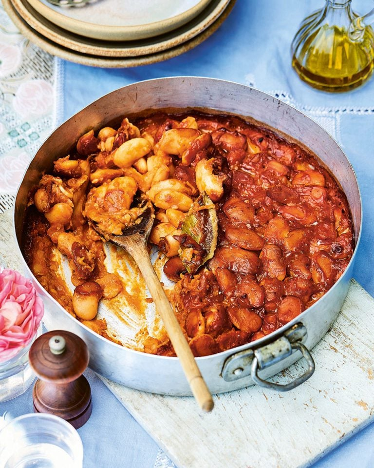

Prebranac

Prebranac is a classic Serbian baked bean dish, known for its rich flavor and simplicity. Made with tender white beans and plenty of caramelized onions,
it's seasoned with sweet paprika and slowly baked to perfection. Prebranac is especially popular during winter and Orthodox fasting periods,
but it's enjoyed year-round as a hearty main or comforting side. It's fully plant-based, affordable,
and gets even tastier the next day—making it a true staple of Serbian home cooking.
Ingredients:
- 500g white beans (e.g. lima or cannellini)
- 2 large onions (thinly sliced)
- 3 cloves garlic (minced)
- 1–2 tsp paprika
- 1 bay leaf
- Salt and pepper to taste
- 50ml oil (sunflower or olive)
- Water as needed
Instructions:
- Soak beans overnight, then rinse and boil until tender (about 1–1.5 hrs).
- In a pan, sauté onions in oil until golden, then add garlic and paprika.
- In a baking dish, layer cooked beans and onion mixture. Add bay leaf, salt, and pepper.
- Pour a bit of water to moisten, and bake at 180°C (350°F) for about 45 minutes, until the top browns slightly.
Serve with: bread and pickled vegetables.
Home